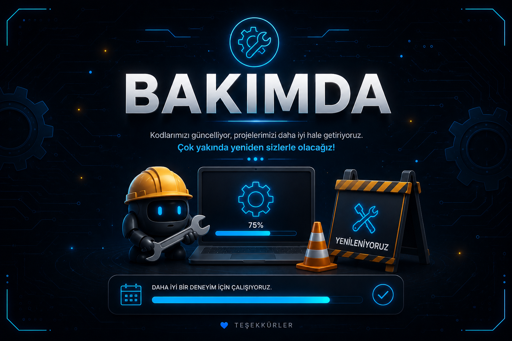

Projeler

Spotify Dot Matrix
Spotify'da çalan şarkıları gerçek zamanlı olarak Arduino Uno ve MAX7219 Dot Matrix üzerinde gösteren proje.

BAKIMDA
En yakın zamanda yeni projemiz sizlerle olucak.

Arduino Servo Radar
HC-SR04 ultrasonik sensör ve SG90 servo motor kullanılarak geliştirilen gerçek zamanlı radar simülasyonu.